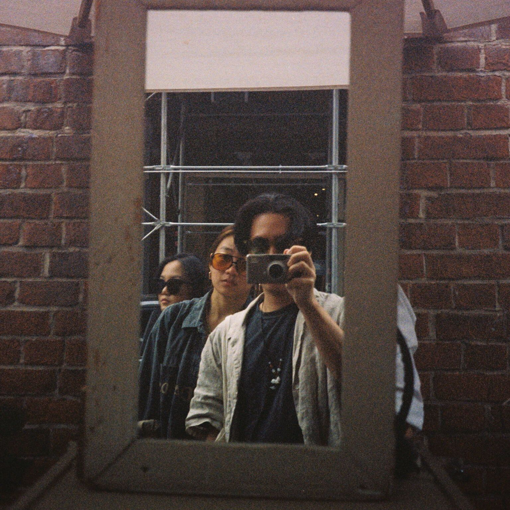

Hi there! I'm a sophomore at Carnegie Mellon studying Electrical and Computer Engineering. Additionally, I am pursuing minors in Computer Science and Computational Finance.
Last summer, I did research at the Pittsburgh Supercomputing Center in parallel computing, machine learning, and their applications to high performance computational studies. I also attended Capital One's Software Engineering Summit at the end of the summer.
I began working on this site towards the end of June 2018. In addition to creating a host for my professional portfolio, I meant for this project to also serve as a collection of my thoughts and to keep track of personal change and growth throughout the rest of college and beyond.
Feel free to contact me at bradley.m.zhou@gmail.com for anything!
What I do on campus!
Asian Students Association
 I am the head of public relations for Carnegie Mellon’s Asian Students Association. Things we do include culture nights, Booth, and just hanging out with each other.
I am the head of public relations for Carnegie Mellon’s Asian Students Association. Things we do include culture nights, Booth, and just hanging out with each other.
Central Church
 I go to a Korean church near Carnegie Mellon’s campus called Central Church. I am also a member of Central’s campus fellowship.
I go to a Korean church near Carnegie Mellon’s campus called Central Church. I am also a member of Central’s campus fellowship.
My other hobbies and interests!
Other things I enjoy include tennis, basketball/basketball analytics, men's fashion, mechanical keyboards, raw denim, and cute animal gifs.